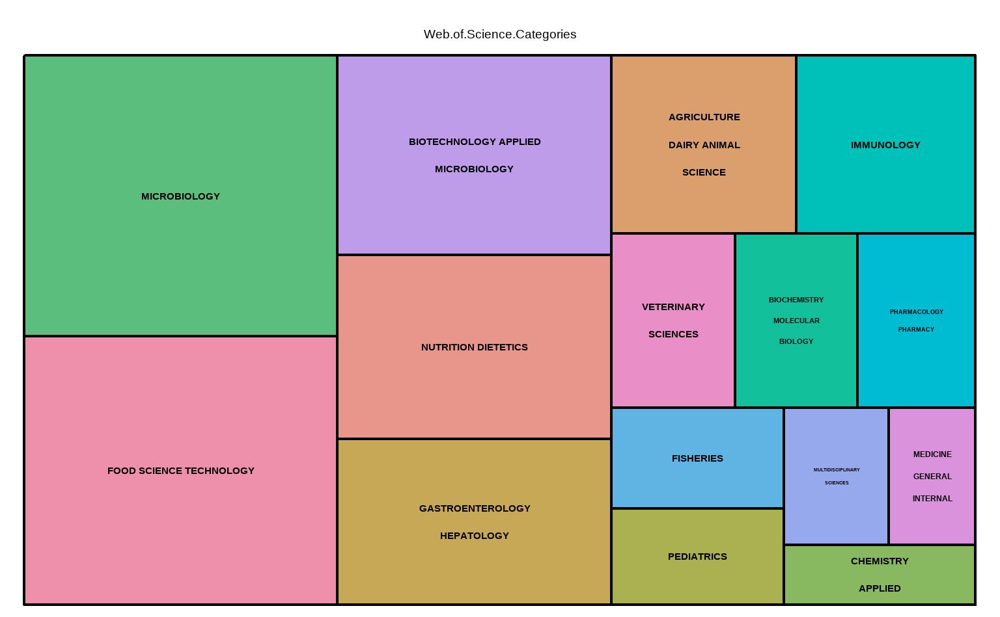

第 2 章 全球的益生菌研究概览
2.1 益生菌相关研究现正处于爆炸式增长阶段
数量，最能展示研究的火爆程度。本章所用的数据集中，从 1990 年以前便有益生菌相关研究， 但是一直不愠不火，而到了 2000 年前后，事情开始起了一些变化。
图 2.1: 全球益生菌研究的增长情况 ppt
图 2.1 展示了全球益生菌研究论文发表数量的增长情况。 可以看出，进入二十一世纪前后，益生菌的研究成果呈现出突飞猛进的形势， 每年的论文发表数目持续攀高。
2.2 中国也有非常多的益生菌研究成果
现在的市面上，益生菌产品大家都喜欢舶来品，但是相关研究中国可真不差。 或许假以时日，中国制造的益生菌产品也可以像其它中国制造一样畅销全球。
](plot/global-output-by-country-1.png)
图 2.2: 益生菌研究成果最突出的国家 ppt
图 2.2 展示了全部论文的来源国。 由图可知，美国、中国、意大利等国科学家对相关研究的贡献最为突出。 其中，中国的益生菌研究论文总量已经非常接近美国，约相当于后者的八成。
2.3 益生菌研究在多个学科中涉及且在多个领域中应用
你以为益生菌只能用来调理肠胃？应该说远不止于此，它的研究和应用领域实际上非常广泛。

图 2.3: 益生菌研究横跨生物、食品、农业等多个学科 ppt
图 2.3 展示了益生菌研究涉及的广泛研究领域。 实际上，相关研究至少涉及几十个大的或小的学科领域， 此处仅展示了最常见的十几个，这其中包括了微生物学、食品科学与技术、 应用微生物学生物技术等多个门类。 值得一提的是，益生菌研究不仅涉及到肠病/肝病学、儿科学等与人健康息息相关的领域， 还在畜牧、兽医、渔业等领域中有非常多的研究，预示着益生菌在农业生产中的重要应用价值。
2.4 研究类型
有人研究就有人总结，你觉得综述文章所占的比例可以反映观点的多样化程度吗？
](plot/global-document-type-1.png)
图 2.4: 研究类型 ppt
图 2.4 展示了论文的类型。 这其中以研究论文最多，占近四分之三的比例，综述论文占剩下的一半左右。